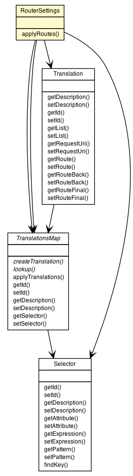

org.vorpal.blade.services.router.config.RouterSettings
org.vorpal.blade.services.router.config.RouterSettings
|
||||||||||
| PREV CLASS NEXT CLASS | FRAMES NO FRAMES | |||||||||
| SUMMARY: NESTED | FIELD | CONSTR | METHOD | DETAIL: FIELD | CONSTR | METHOD | |||||||||

java.lang.Object
public class RouterSettings
| Field Summary | |
|---|---|
Translation |
defaultRoute
|
java.util.LinkedList<TranslationsMap> |
maps
|
java.util.LinkedList<TranslationsMap> |
plan
|
java.util.LinkedList<Selector> |
selectors
|
| Constructor Summary | |
|---|---|
RouterSettings()
|
|
| Method Summary | |
|---|---|
java.lang.Boolean |
applyRoutes(javax.servlet.sip.SipServletRequest outboundRequest)
|
| Methods inherited from class java.lang.Object |
|---|
clone, equals, finalize, getClass, hashCode, notify, notifyAll, toString, wait, wait, wait |
| Field Detail |
|---|
public java.util.LinkedList<Selector> selectors
public java.util.LinkedList<TranslationsMap> maps
public java.util.LinkedList<TranslationsMap> plan
public Translation defaultRoute
| Constructor Detail |
|---|
public RouterSettings()
| Method Detail |
|---|
public java.lang.Boolean applyRoutes(javax.servlet.sip.SipServletRequest outboundRequest)
throws javax.servlet.sip.ServletParseException
javax.servlet.sip.ServletParseException
|
||||||||||
| PREV CLASS NEXT CLASS | FRAMES NO FRAMES | |||||||||
| SUMMARY: NESTED | FIELD | CONSTR | METHOD | DETAIL: FIELD | CONSTR | METHOD | |||||||||